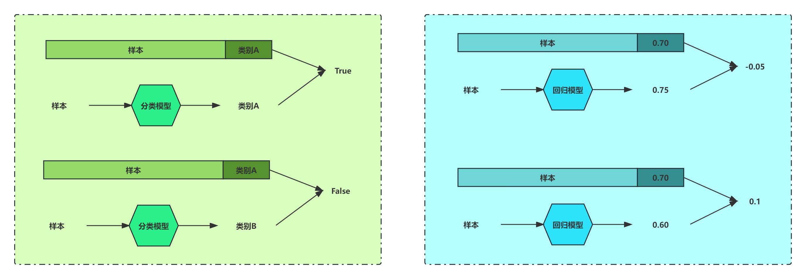

1. Basic Concept


2. ML Task Type
2.1. Classification Regression

|

|
3. ML Category
3.1. Supervised Learning
-
有监督学习：利用大量的标注数据来训练模型，对模型的预测值和数据的真实标签计算损失，
然后将误差进行反向传播(计算梯度、更新参数)，通过不断的学习，最终可获得识别新样本的能力； -
每条数据都有正确答案，通过模型预测结果与正确答案的误差不断优化模型参数；
3.2. Unsupervised Learning
-
无监督学习：不依赖任何标签值，通过对数据内在特征的挖掘，
找到样本间的关系，如聚类相关的任务； -
只有数据没有答案，常见的是聚类算法，通过衡量样本之间的距离来划分类别；
-
有监督和无监督最主要区别：模型在训练时是否需人工标注的标签信息；
3.3. Semi Supervised Learning
-
半监督学习：用有标签数据和无标签数据来训练模型
-
一般假设无标签数据远多于有标签数据，如使用有标签数据训练模型，
然后对无标签数据分类，再使用正确分类的无标签数据训练模型； -
利用大量的无标注数据和少量有标注数据进行模型训练；
3.4. Self Supervised Learning
-
自监督学习：ML的标注数据源于数据本身，而非由人工标注
-
目前主流大模型的预训练过程都采用自监督学习，
将数据构建成完型填空形式，让模型预测对应内容，实现自监督学习； -
通过对数据处理，让数据的一部分成为标签，由此构成大规模数据进行模型训练；